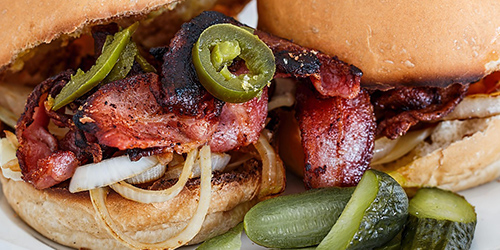
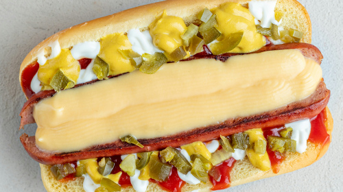
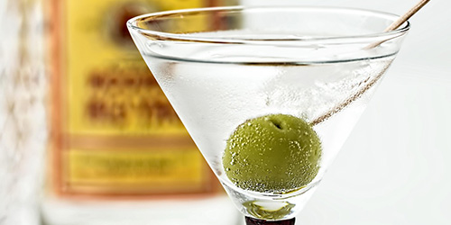
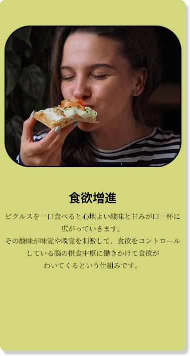
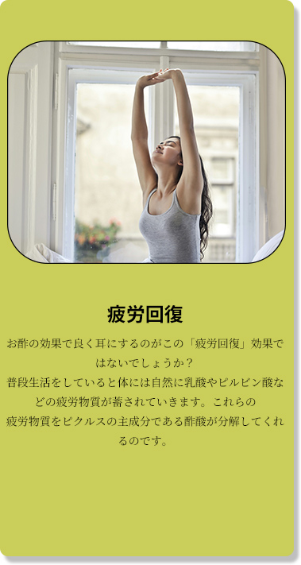
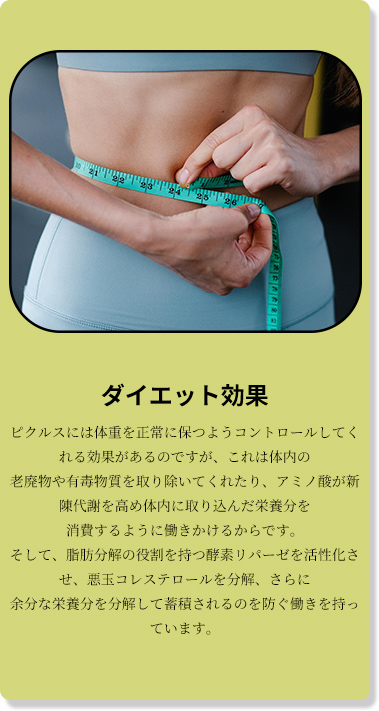
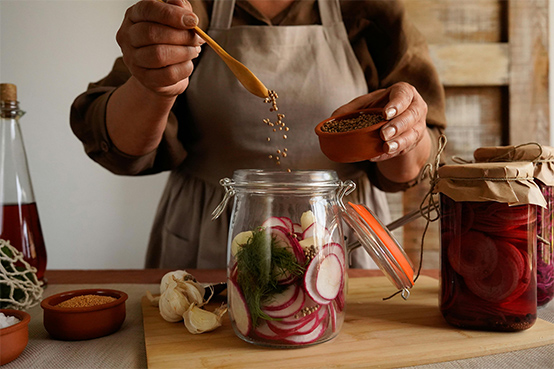

ピクルスは欧米を代表する酢を使った漬物です。
発酵させるものとさせないものの2種類があり、発酵させないピクルスは酢などに漬け込みます。
発酵させるものは乳酸発酵をさせて酸味を出します。

ハンバーガーに使われるきゅうりのピクルスは、
香辛料をきかせた砂糖液に漬け込んだり、
ディルという香草と一緒に漬け込んだりしたものです。
中にはにんにくと一緒に漬け込む場合があります。

ホットドッグのソーセージの上に散らばすピクルスは
レリッシュピクルスといい、
砂糖液に漬け込んだものを細かく刻んだものです。

カクテルのマティーニなどに添えられる
オリーブのピクルスは、
ワインビネガーに漬け込んだものです。
日本の漬物と違うところは、ピクルス液を作らなければいけないところです。
鍋を使って火にかけて作ります。このピクルスを漬け込む液さえ作ってしまえば、あとは簡単に様々な
ピクルスを作ることができます。自分だけのオリジナルピクルスを作ってみませんか？




・酢 2カップ
・白ワイン 1カップ
・水 3/4カップ
・砂糖 80g
・塩 小さじ2
・にんにく（スライス） 1片
・赤唐辛子 2本
・ローリエ 2枚
・粒こしょう 小さじ2
無印良品の「ソーダガラス密封ビン」は
入手が容易でおすすめです。
しっかりと密閉できる厚手のガラスビンは、
サイズが豊富で機能的です。
http://www.muji.com/jp/
東京都新宿区新宿３－１７－１
無印良品新宿店